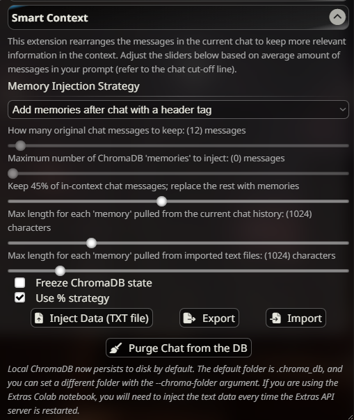

智能上下文
此扩展已不再维护，不建议使用。请考虑使用聊天向量化作为可能的替代方案。
免责声明
使用此扩展并不能保证更好的聊天体验或任何形式的记忆改善。只有在您完全了解向量数据库使用的所有影响后，方可使用。
它是什么？
智能上下文是一个 SillyTavern 扩展，它使用 ChromaDB 库，让您的 AI 角色能够访问正常聊天历史上下文限制之外的信息。
有什么用处？
如果您的聊天记录非常长，大部分内容将超出通常的上下文窗口，因此 AI 在撰写回复时无法访问这些内容。
智能上下文会自动获取聊天文件的完整历史记录，并将其存入向量数据库。每当您在聊天中输入新内容时，该数据库就会被搜索；如果找到包含匹配关键词的消息，这些聊天消息将被放入上下文中，让 AI 在撰写下一条回复时能够看到它们。
设置说明
- 将 SillyTavern 更新到至少 1.10.6 版本。
- 从扩展面板（层叠方块图标）的"下载扩展与资产"菜单中安装"智能上下文"扩展。
- 安装或更新 Extras 至最新版本。或者，使用 Colab 笔记本。
- *仅限本地安装：*为 Extras 安装 requirements-complete.txt（即使您之前在旧版安装中已执行过此操作）。
- 启用 chromadb 模块运行 Extras：
python server.py --enable-modules=chromadb
安装 ChromaDB 时遇到错误？
ERROR: Could not build wheels for hnswlib, which is required to install pyproject.toml-based projects安装 chromadb 包需要以下之一：
- 已安装 Visual C++ 构建工具：https://visualstudio.microsoft.com/visual-cpp-build-tools/
- 从 conda 安装 hnswlib：
conda install -c conda-forge hnswlib
配置
启用智能上下文后，您应在 SillyTavern 界面中对其进行配置。 智能上下文可在扩展菜单 中配置。

有 4 个主要概念需要了解：
- 聊天历史保留
- 记忆注入数量
- 单条记忆长度
- 注入策略
智能上下文仅在聊天历史中有 10 条消息后才会启动
- 在新聊天开始时，ChromaDB 处于非活动状态。
- 一旦聊天累积了 10 条消息，它将开始将所有消息记录到数据库中，并根据需要召回消息。
聊天历史保留（"保留消息"）
默认情况下，ChromaDB 会保留滑块中指定数量的最近自然聊天历史消息。 超出此数量的消息将从您发送的提示词中移除，如果数据库中存在"记忆"，它们将被添加以替代较旧的聊天历史消息（请参阅下方的策略）。
记忆注入数量
智能上下文将插入到上下文中的"记忆"的最大数量。 并非每次注入尝试都能获得这个完整数量。 如果您发送的输入与"狗"相关，但数据库中只有一条其他消息与狗相关，那么只会插入 1 条。
单条记忆长度
这是每条注入"记忆"的最大允许长度。 单位为字符（不是词元）。 如果设置得太小，记忆可能会被截断。
示例：
Ross: I like dogs with long fur and fluffy tails. I dislike dogs with short fur and short tails.
这条数据库"记忆"长度为 103 个字符，因此您需要将滑块至少设置为 103，才能将其完整地提取到上下文中。
如果滑块值小于 103，则消息将被截断后注入。
注入策略
替换最旧的历史记录
此策略保留最近的 X 条消息，移除之前的所有消息，并用"记忆"替换它们。
优点
- 不太可能超出上下文限制
- 位于上下文顶部的记忆对响应的即时影响较小，但仍可提供"背景信息"。
缺点
- 旧消息被直接插入聊天历史中，没有特殊标记，通常与保留的自然聊天历史消息没有直接的自然关联。这可能会让智能程度较低的 AI 模型感到困惑。
添加到底部
此策略保持聊天历史的自然状态，并将"记忆"添加到其之后的格式化 [括号标题] 中。 这意味着"保留消息"滑块实际上被禁用了。
优点
- 不缩短或改变当前的自然聊天历史
- "记忆"位于聊天之后，对 AI 的下一条响应有更强的影响
缺点
- 由于没有聊天条目被移除/替换，超出上下文限制的可能性更高。
- 由于记忆非常靠近提示词的末尾，它们对 AI 响应的影响可能过于强烈。
自定义深度
此策略保持聊天历史的自然状态，并在您确定的深度处，按照您指定的模板添加"记忆"。 这意味着"保留消息"滑块实际上被禁用了。 自定义注入消息应包含 `` 模板词，所有查询到的记忆将被放置在此处。
优点
- 灵活地尝试记忆放置位置
- 可自定义上下文中记忆的引入方式
缺点
- 由于没有聊天条目被移除/替换，超出上下文限制的可能性更高。
使用百分比策略
注意：这与"添加到底部"策略不兼容，后者根本不删除任何消息。
在使用"替换最旧的历史记录"策略时，勾选此框将启用滑块，用于选择以百分比替换上下文中聊天历史的比例。这也将禁用用于手动选择消息数量的两个滑块。
此策略会自动计算要用智能上下文记忆替换的聊天历史百分比，而不是固定数量的消息。
优点
- 比手动计算消息数量更简单
- 随可用上下文大小自动调整，对小型和大型提示词空间应用相同的百分比
缺点
- 计算要删除多少历史记录可能略有不准确，因为它基于每条消息的估计词元数
- 它将要删除的消息数量四舍五入到最接近的 5 的倍数（0、5、10、15、20 等），因此不如手动数字选择精细。
记忆召回策略
仅从此聊天中召回
这是智能上下文的默认行为，仅从此特定聊天的 ChromaDB 集合中提取"记忆"。
从所有角色聊天中召回
这是智能上下文的实验性行为，从所选角色的所有 ChromaDB 集合中提取"记忆"。 理论上，这应该允许开发跨越多次互动的更健全的记忆集。 建议与"添加到底部"或"自定义深度"策略配合使用，并将"保留消息"设置为较小的数值，以便 ChromaDB 更早地从记忆中提取。
使用智能上下文
一旦启用并配置完成，智能上下文将自动运行。
ChromaDB 会为 SillyTavern 中打开的每个聊天创建一个新数据库。 该数据库将自动填充完整的聊天历史。
您也可以手动将文本文件插入数据库。
这些文本文件不必是聊天记录。它们可以是任何内容（维基百科条目、同人小说等）。
清除数据库
您可以使用"清除数据库"按钮来清除当前聊天的数据库。
当您发现存储了不准确的记忆（例如您已删除或编辑过的聊天消息）时，这会很有帮助。
常见问题
聊天结束后数据库会怎样？我能保存它们吗？
对于本地安装的 Extras 服务器，智能上下文会保存数据库。在通常的使用情况下，无需手动保存。
对于 Colab 用户，Extras 服务器关闭时数据库会被清空。使用导出按钮将数据库保存为 JSON 文件，并在下次使用时导入。
通常情况下，无需保存智能上下文数据库。
目前我们有导入/导出功能，允许您保存聊天的数据库并在以后再次使用。
我能为所有聊天创建一个大型数据库来引用吗？
这并不是智能上下文功能的良好用途。 我们建议为此目的使用世界信息。